Vous trouverez sur cette page une présentation de ma méthode de travail et d'organisation, un récapitulatif de mon histoire et des enjeux m'ayant poussé à m'inscrire à la Web School Factory, les raisons m'amenant à choisir la majeure Tech, et enfin une présentation de mes projets sur le long terme et ma vision de l'avenir. Bonne navigation!
Je pense que la base de ma méthode de travail, et sûrement l'aspect me procurant le plus d'efficacité, est la régularité que j'accorde au travail qui m'est accordé. Je travaille après les cours tous les jours pendant au moins une heure. |
|
| Ce sont également mon organisation et mon investissement constant dans mes projets qui me permettent d'être "hyperactif" et de m'investir efficacement dans mes différents projets et travaux. |
|
Le travail d'équipe est également inhérent à ma méthode de travail; je suis plutôt quelqu'un de polyvalent, touche-à-tout, parfois trop curieux. Je n'hésite donc jamais à demander de l'aide à ceux possédant une meilleure expertise que moi, je considère que la vie est une constante leçon et que tout savoir ou expérience sont bons à prendre. |
Ma situation familiale est quelque peu particulière, et je pense qu'il est important que je la présente, celle-ci étant un élément important de mon développement et de ma situation actuelle m'amenant à demander la bourse.
J'ai vécu pendant 12 ans, de mes 3 à mes 15 ans, avec ma mère, souffrant de dépression et ayant une situation financière précaire. Nous hétions hébergés chez ma grand-mère maternelle, qui déceda à mes 18 ans. Je n'ai eu aucun contact avec mon père durant près de 6 ans, de mes 9 à mes 15 ans. Après un malaise hypoglycémique (je souffre de diabète), et la découverte des services sociaux de ma situation, je fus placé à l'ASE de mes 15 à mes 18 ans. |
 |
Afin de m'éviter la famille d'accueil ou le foyer, mon père m'envoya en internat: 5j/7 dans l'Essonne durant mon année de Seconde, et 7j/7 en Haute Savoie durant le premier trimestre de Première. Je fus victime de harcèlement au sein de cet internat, et retourna ensuite chez ma grand-mère, faute de place dans les structures compétentes. Après une altercation physique entre ma mère et ma grand-mère, je fûs envoyé en famille d'accueil de mes 16 à 18 ans. |
|
Je ne m'y sentais pas chez moi, mon moral et mes notes baissèrent tous deux durant mon placement à l'ASE. Cela me mena à prendre mon indépendance à mes 18 ans et de découvrir le monde qui s'offrait à moi. |
|
|  | Je vis depuis seul. Je passa ma première année d'études supérieures au sein de la Licence Anglais Culture Economique de la Sorbonne Nouvelle ( Paris III ), mais bien que j'ai de l'affection pour la langue anglaise, je réalisa que je préférais bien plus le management. |
Cette réflexion, jointe à ma passion pour le numérique et tout ce qui l'entoure, me mena vers la Web School Factory au sein de mes recherches de réorientation. La Web School Factory étant un établissement privé devant donc être financé, ma situation ne me laissait que deux choix: prendre un prêt étudiant pour me lancer dans ma passion, apprendre des compétences professionnelles, développer mon réseau et concrétiser mes projets ou préférer la sécurité d'une faculté publique, ne m'investir qu'à moitié dans mes cours d'une oreille lassive, motivé seulement par la bourse de l'état et enfermé dans des perspectives d'avenir restreintes. Le choix fût assez évident, honnêtement.Mais en choisissant cette voie, j'avais cependant bien conscience de l'investissement qu'elle me demanderait des défis que je devrais relever. Aujourd'hui? Je suis activement investi dans l'école, autant sur le plan scolaire qu'associatif, j'ai en effet l'honneur d'endosser le rôle de chef de projet de la future Association de Musique de l'école. J'ai également efficacement avancé sur mon projet de création d'entreprise web, notamment grâce à l'aide de mes collaborateurs, et à l'heure ou j'écris ces lignes nous sommes en train de peaufiner notre étude de marché. Grâce à la web School Factory, j'ai le sentiment de réellement avancer dans mon projet professionnel et de pouvoir relever de nouveaux défis tous les jours. |
Plusieurs raisons m'ont menées sur ce chemin;
La première, évidemment, est ma passion pour l'informatique, les jeux vidéos, et le Web depuis le plus jeune âge. Mon premier contact avec l'informatique remonte à mes deux ans, âge auquel mes parens m'ont appris à utiliser une souris d'ordinateur. J'ai très vite eu accès à une Gamecube, et un peu plus tard au Web grâce à mon premier ordinateur, obtenu à mes 9 ans. Il va sans dire que le Web est un monde fascinant, dans lequel je suis bercé depuis l'enfance, avec laquel je me sens presque familier. Pouvoir le maîtriser, en comprendre les enjeux et en vivre est presque un rêve pour moi. |
|
Le digital et l'e-business sont au coeur d'une mutation stratégique des entreprises, et plus largement sociétale. La numérisation et l'activité en ligne, d'autant plus depuis la pandémie mondiale, sont des transitions que doivent désormais effectuer toutes les entreprises, quels que soient leurs secteurs d'activités. Ainsi, le digital se présente évidemment comme un secteur d'activité péren, d'avenir, présentant maintes opportunités et défis à relever. |
|
Et il est en lui-même un défi, constamment en évolution, ses normes et pratiques changent fréquemment, tout comme ses enjeux. Il requiert une capacité d'adaptation, d'auto-critique et d'évolution (car on évolue et on doit évoluer avec lui) incomparables à d'autres secteurs, et ça en fait pour moi tout le charme. |
Voici comment j'aimerais mettre à profit les enseignements dont je bénéficie au sein de la Web School Factory:
Tout d'abord, acquérir mon indépendance. Par cela j'entends bien évidemment l'indépendance financière, mais tout autant l'indépendance professionnelle et personnelle, qui me permettront de devenir un individu intègre et agréable mais aussi un professionnel compétent et efficace. |
|
Pour être compétent et efficace, j'ai évidemment besoin de devenir un expert dans les domaines dans lesquels je travaille, je compte donc mobiliser tous les enseignements dont me dispensera la Web School Factory avec mon sérieux, mon organisation et ma régularité pour pouvoir connaître sur le bout des doigts mes sujets! |
|
Un professionnel, et plus particulièrement un freelance, a sans nul doute besoin d'un réseau fourni pour pouvoir obtenir des opportunités uniques et les exploiter. Selon moi, un des gros points forts de l'école est la possibilité de mise en relation entre différents intervenants incroyable qu'elle offre, ainsi il serait regrettabe de ne pas l'exploiter ou en tirer profit. Un de mes objectifs est donc de fournir et diversifier un maximum mon portefeuille de contacts afin d'établir de solides, profondes et réelles connexions pour ma future vie d'adulte et de professionnel. |
|
Enfin, et sans doute le point le plus important, je pense que la WSF me permettra de réellement m'épanouir. Découvrir le monde professionnel, développer mes passions, nouer des relations exaltantes, me sentir intégré et investi, ce sont des bienfaits que m'apporte cette école parmis tant d'autres. |